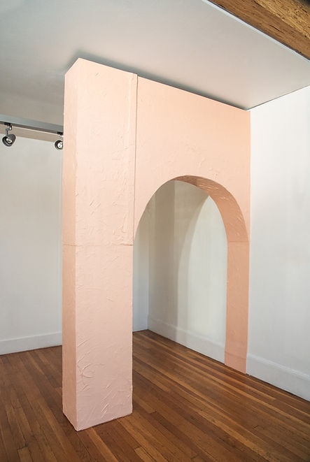

Monuments of Memory
An Installation by Nancy Sayavong and Gabriella Willenz
October 8 - October 31, 2021
The interest in the objects and structures lies not in their utility but in the stories they embody and to which they unfold. Nancy Sayavong's body of work is inspired by the architectural landscape of a house she is restoring, in a subdivision that was built historically for white working-class families. She is creating replicas of interior architectural elements that continuously fail to mimic the original and instead offer a glimpse at her sensibility and positionality.
Gabriella Willenz identified and photographed 50 objects of her family's heirlooms, then meticulously reproduced them as theatrical props in collaboration with Berkeley Repertory Theater's head prop master. The props reveal the various ways objects, as well as social structures to which we adhere, are constructed, enacted, and preserved.
Sayavong and Willenz collaborated on a series of casts pointing to the interior landscape of a house (the flow of electricity, water, heat, etc.), to consider exchanges that occur between a house and its inhabitants. It is the mechanism and the forces that shape identity, lineage, and home that are explored in this exhibition.
